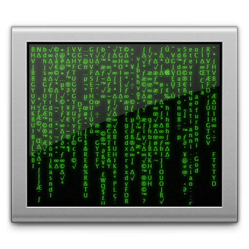

BDD - When and How
Behavior Driven Development to the rescue!
What is BDD?
...comprehensive definition
BDD is a second-generation, outside–in, pull-based, multiple-stakeholder, multiple-scale, high-automation, agile methodology.
The result?
Tested software, that works!
...comparing with TDD
- an evolution in thinking behind TDD
- it builds upon TDD by formalising the good habits of the best TDD practitioners:
- working outside-in
- examples for requirements
- ubiquitos language
BDD... a.k.a
- Clarity
- Vision
- Focus
- Confidence
But let's see BDD in action
In the beginning...
The product management team...

...has an idea

Next
The same idea...
BACKLOG
goes to backlog...
The team gathers around
Product Management
Business Analyst

Business Analysts???
Tech Leads

developers

...and testers

The team takes the the idea...
Various discussions emerge...
...and finally, a story appears

But the most important gain...Shared understanding!

Now let's have some fun
The UX guy...
...is able to define the wireframes

And the fun continues
Now it's the designers' turn to do their magic

But there's a lot more to BDD
Testers are working together with the developers to get the story/feature implemented
How does this work?
While developers are defining the architecture...

...testers are working hard to automate what's being implemented.
The result?
Tested software, that works!
Could it be that easy?
Yes, when the software product has emerged from a shared collaboration

How would this work exactly?
- Our PO has an idea about a new feature.
- He/she takes a note of that idea in our backlog.
- Ok, we've seen the new epic/story, but the enginerring team is not exactly sure what to do at this point.
- We gather the team (PO, developers, testers, UX) and discuss:
- Why do we need this new feature?
- What is the business value brought by the new feature?
Let's go on...
Ok, now we have defined the behavior. What's next?
- We have a clear story in our backlog, with predefined examples.
- UX starts working on wireframes, closely followed by designers.
- Tech leads and developers start working on the arhitecture.
- Developers start working on implemeting the feature.
- Testers start defining and automating the executable specifications.
How about a practical example?
As a PBS user, I want to be able to localize to any station and see its tv schedule.
Let's see how this works with a BDD specific tool
Lettuce